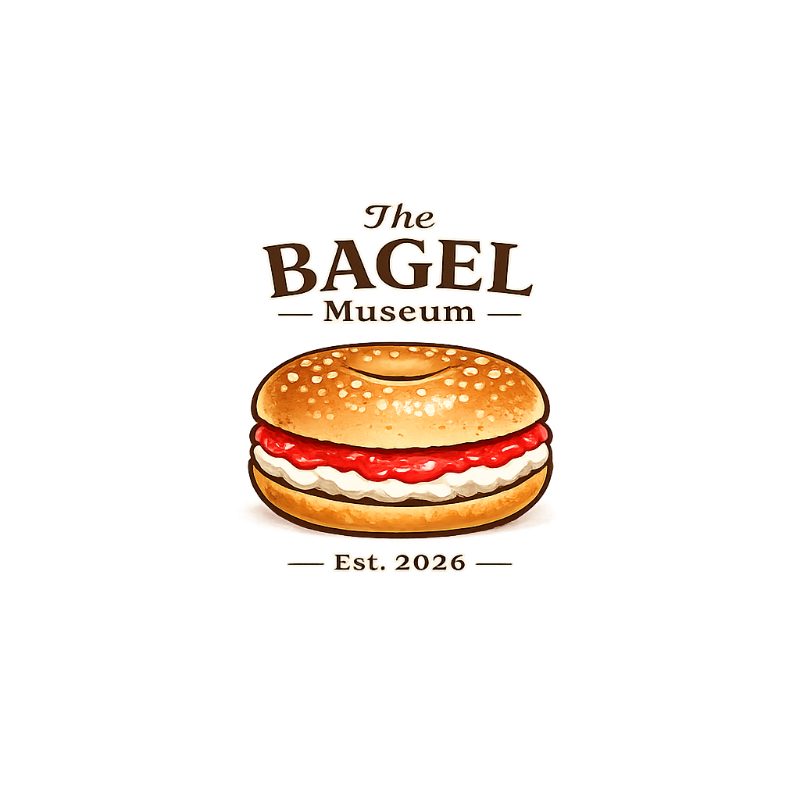

Bagels Through Time
Follow the bagel from immigrant bakery traditions to its place in modern brunch and café culture.

Featured exhibits, food history, and the art of the perfect schmear.
Explore rotating exhibitions about bagel history, cream cheese culture, neighborhood bakeries, and the visual language of iconic breakfast traditions.
Follow the bagel from immigrant bakery traditions to its place in modern brunch and café culture.
Discover how texture, flavor, and presentation transformed cream cheese into a cultural ritual.
A seasonal exhibit celebrating sweetness, nostalgia, and the unexpected elegance of a deli favorite.
Watch a bagel-history video to deepen the museum experience and connect the exhibits to real food history and cultural storytelling.
Book Your Visit
Bagels Through Time remains the museum’s most visited historical gallery.
The strawberry cream cheese exhibit changes its pairings and visuals each season.